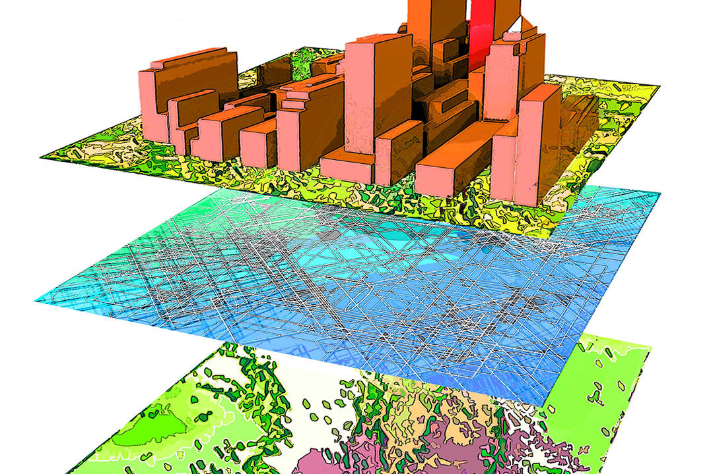
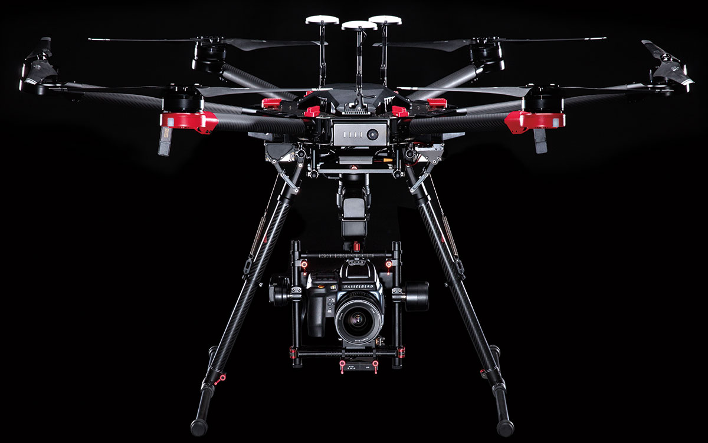

-Home
-About
-Services
-Contact

One Solution for Technology Needs
Photography
 Photography that can be done from both the air and the ground.The high quality images can help create a forever memory with stunning colors and resolution for prints. Photography is the art, application, and practice of creating durable images by recording light, either electronically by means of an image sensor, or chemically by means of a light-sensitive material such as photographic film. It is employed in many fields of science, manufacturing (e.g., photolithography), and business, as well as its more direct uses for art, film and video production, recreational purposes, hobby, and mass communication
Photography that can be done from both the air and the ground.The high quality images can help create a forever memory with stunning colors and resolution for prints. Photography is the art, application, and practice of creating durable images by recording light, either electronically by means of an image sensor, or chemically by means of a light-sensitive material such as photographic film. It is employed in many fields of science, manufacturing (e.g., photolithography), and business, as well as its more direct uses for art, film and video production, recreational purposes, hobby, and mass communication
GIS
 A geographic information system (GIS), or geographical information system, captures, stores, analyzes, manages, and presents data that is linked to location. Technically, GIS is geographic information systems which includes mapping software and its application with remote sensing, land surveying, aerial photography,mathematics, photogrammetry, geography, and tools that can be implemented with GIS software. This technology can use drones and photography to help get stunning results from collected data.
Drone
 An unmanned aerial vehicle (UAV) (or uncrewed aerial vehicle, commonly known as a drone) is an aircraft without a human pilot on board. UAVs are a component of an unmanned aircraft system (UAS); which include a UAV, a ground-based controller, and a system of communications between the two. The flight of UAVs may operate with various degrees of autonomy: either under remote control by a human operator or autonomously by onboard computers referred to as an autopilot.
Footer
Contact Information:
Email: Keeganflahive@gmail.com
Phone: 717-917-4950